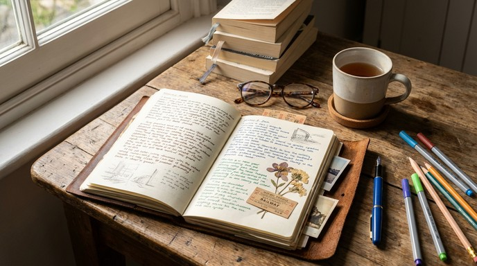

How I Spend My Time
Life is all about balance. For me, that balance comes from three distinct activities that feed my mind, body, and soul.
📚 Reading Books
Reading is my escape. Whether it is high fantasy, historical fiction, or a political-biography, I love getting lost in different worlds. It expands my vocabulary and gives me new perspectives on life.
🍳 Cooking
Cooking is my creative outlet. I enjoy experimenting with new spices and trying recipes from different cultures. There is nothing quite as satisfying as sharing a homemade meal with friends.
✍️ Journaling
Journaling helps me stay grounded. I use it to track my goals, reflect on my day, and practice gratitude. It is a quiet moment in a busy world where I can organize my thoughts.